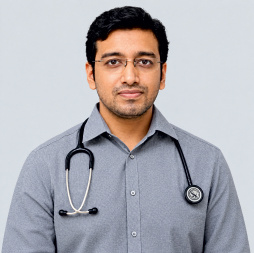

Innovation & R&D
Working with international technology and research collaborations to develop and advance diagnostic solutions.
Dr. NTR Biosciences Pvt. Ltd., operating under the LORVEN brand, is focused on making advanced diagnostic technologies more accessible through innovation, precision, reliable products and customer-centred support.
Headquartered at the Medical Technology Park in the Sangareddy District of Hyderabad, Telangana, Dr. NTR Biosciences describes its work as combining diagnostic innovation with local manufacturing. The company brochure identifies a 25,000 sq. ft. IVD manufacturing facility dedicated to diagnostic equipment and reagents.
The company’s stated direction is to support India’s evolving in-vitro diagnostics landscape with quality-focused products, technology transfer, cost-effective manufacturing and responsive technical service.
The company brochure highlights a commitment to innovation, technological collaboration, manufacturing strength and practical support for laboratories.
Working with international technology and research collaborations to develop and advance diagnostic solutions.
Developing diagnostic instruments and reagents with an emphasis on dependable performance, accuracy and consistency.
Providing technical assistance, timely delivery and responsive service to meet the changing needs of diagnostic laboratories.
The following profiles and photographs are taken from the leadership section of the supplied company product catalogue. Biographical details are presented as stated in that source.
According to the brochure, Dr. Rao is a leading medical gastroenterologist in Andhra Pradesh and an alumnus of Guntur Medical College. He completed his post-graduation in 1993 and has more than 27 years of experience in gastroenterology, with a stated focus on clinical excellence and patient confidence.

The brochure describes Dr. Guram as a consultant surgical gastroenterologist at Harini Hospitals. It notes an MS in General Surgery in 2017, a Gold Medal and an All India Rank 1 in the super-specialty entrance examination, followed by MCh in Surgical Gastroenterology at Jawaharlal Institute of Postgraduate Medical Education and Research (JIPMER), and an assistant professor role at NRI Medical College, Vijayawada.
As described in the brochure, Dr. Manu Kaushik is a urologist who completed an MCh in Urology from Ramaiah Medical College in 2025. The profile also notes recognition at the 35th Annual Conference of the Association of Urologists of India in July 2024 and an interest in medical education, research and healthcare innovation.
Leadership names, titles, biographies and portraits sourced from pages 4–5 of the supplied “DNBPL Master Brochure_R003” PDF. Please confirm current designations and approve biographies before publishing.
The company brochure highlights proprietary and developing diagnostic capabilities alongside a broad portfolio of instruments and reagents.
The brochure describes a proprietary IGRA test intended to help detect latent tuberculosis, with an emphasis on sensitivity, specificity and early diagnosis.
The brochure presents point-of-care molecular assays designed to detect 5 to 20 targets in a single cartridge for rapid, decentralised testing.
The catalogue showcases clinical chemistry, immunoassay, hematology, electrolyte, urine, blood gas and other diagnostic analyser categories.
The portfolio includes clinical chemistry reagents, serology and immunoturbidimetry products, urine strips, hematology reagents and system packs.
Talk with our team about instruments, reagents, product specifications, demonstrations or technical support for your laboratory.